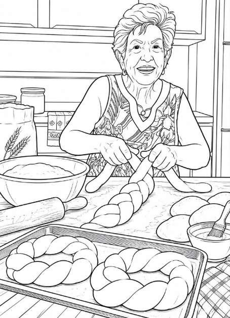

Pão de Batatinha

Ingredientes:
1 kg de farinha de trigo (tem de ser RENATA..rsrsr) 5 batatinhas cozidas
2 tabletes de fermento Fleischmann 9 colheres de açúcar
2 ovos
1 pitada de sal
1 concha mista de gordura e manteiga Leite até dar ponto de enrolar
Modo de preparo
Em uma tigela grande, misture o leite morno, o açúcar e o fermento. Deixe descansar por cerca de 5 a 10 minutos até formar uma espuma.
Adicionar os líquidos e as batatas bem amassadas (já frias ou em temperatura ambiente).
Acrescente os ovos, a gordura e manteiga. Mexa bem até incorporar.
Adicione a farinha de trigo aos poucos, mexendo com as mãos. Por último, coloque o sal. A massa deve ficar levemente macia e um pouco pegajosa.
Sove a massa na bancada enfarinhada por cerca de 10 minutos até ficar lisa e elástica.
Cubra a massa com um pano ou plástico filme e deixe descansar em um lugar morninho por cerca de 50 minutos a 1 hora, ou até dobrar de volume.
Modelar e assar: divida a massa em porções iguais, modele tranças, coloque em assadeira untada e deixe crescer novamente por 1 hora. Asse em forno preaquecido a 200°C por 30 minutos, até dourar.